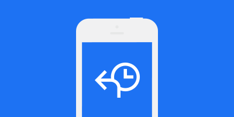

Here's the diagnosis summary
It seems you need partial data recovery.
Selected repair option
PARTIAL DATA RECOVERY
3-5 days
expected time
$200
estimated cost
We will need to have a closer look at your device to confirm this initial diagnosis.
For a faster service, please fill out your details below.
BOOK ONLINE
VISIT US
CALL US
EMAIL US
DEVICE & SERVICE
DIAGNOSIS
SUMMARY & OPTIONS
IPHONE REPAIRS
IPHONE REPAIRS
iPhone X
iPhone 8 Plus
iPhone 8
iPhone 7 Plus
iPhone 7
iPhone 6S Plus
iPhone 6S
iPhone 6 Plus
iPhone 6
iPhone 5S
iPhone 5C
iPhone 5
iPhone SE
iPhone 4S
iPhone 4
iPhone 3GS
IPAD REPAIRS
iPad Pro 12.9
iPad Pro 9.7
iPad Mini 4
iPad Mini 3
iPad Mini 2
iPad Mini
iPad Air 2
iPad Air
iPad 5th Gen
iPad 4
iPad 3
iPad 2
iPad 1 Wi-Fi
iPad 1 3G
SAMSUNG REPAIRS
Galaxy S9 Plus
Galaxy S9
Galaxy S8 Plus
Galaxy S8
Galaxy S7 Edge Duos
Galaxy S7 Edge
Galaxy S7
Galaxy S6 Edge Plus
Galaxy S6 Edge
Galaxy S6
Galaxy S5 Series
Galaxy S4 Series
Galaxy S3 Series
Galaxy S2 Series
Galaxy S1
Galaxy S Duos
OTHER MODELS WE REPAIR
ASUS Phones
BlackBerry Bold
BlackBerry Classic
BlackBerry Keyone
BlackBerry Passport
BlackBerry Priv
BlackBerry Q Series
BlackBerry Torch
BlackBerry Z Series
Google Pixel
Google Pixel XL
HTC Desire Series
HTC M10
HTC One Series
HTC Sensation Series
HTC Wildfire Series
Huawei G/GR Series
Huawei Mate
Huawei Nexus 6P
Huawei P Series
LG G5
LG K/L Series
LG Nexus Series
LG Optimus Series
LG Prada 3.0
Motorola Moto Series
Motorola Nexus 6
Motorola Razr Series
Nokia Lumia Series
OnePlus One
Oppo F/R Series
Sony Xperia Series
Sony Z2/Z4 Tablet
data recovery
liquid damage repair
no power up
screen repairs
software fault
other

What is data recovery?
Data recovery is a process used to extract information from electronic devices. Data can be lost for a variety of reasons and we have the solutions to get it back.